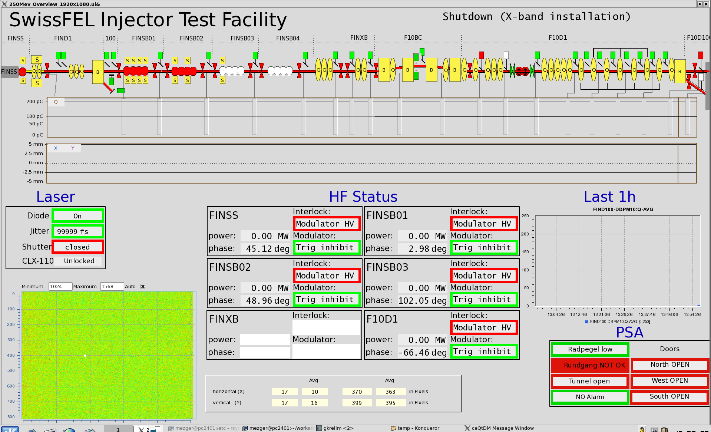
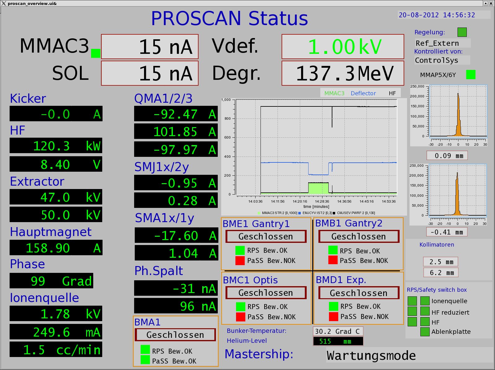
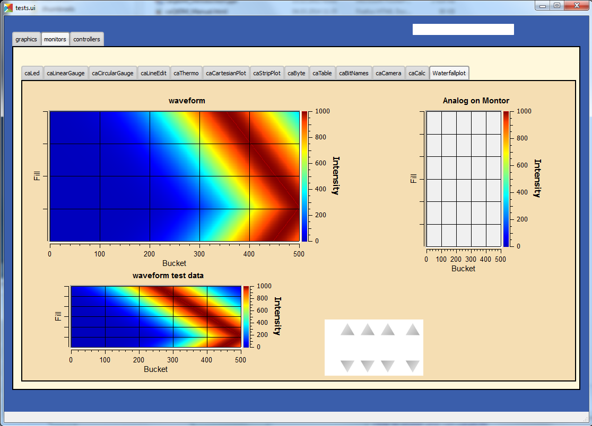
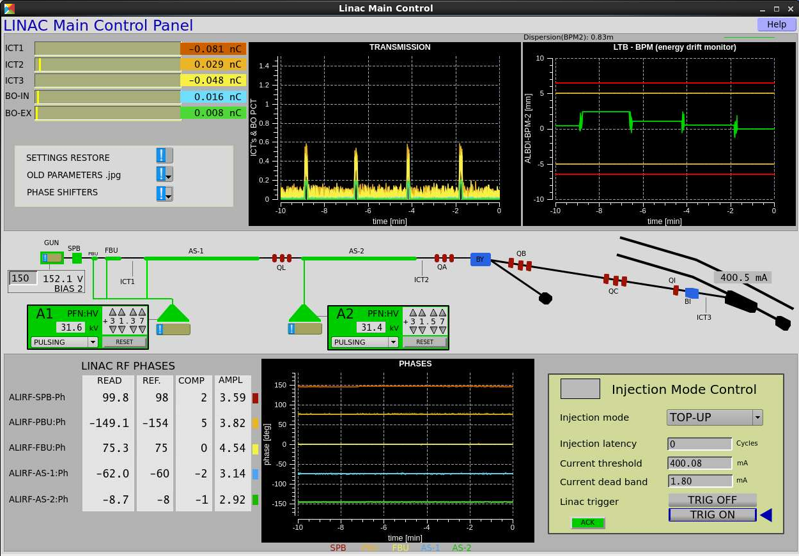

caqtdm
caQtDM is a popular Epics framework for developing panels.
Currently v3.9.3
Designed for everyone, everywhere.
caQtDM makes panel development faster and easier. It's made for folks of all skill levels, devices of all shapes, and projects of all sizes.
caQtDM is open source. It's hosted, developed, and maintained on GitHub.
View the GitHub projectBuilt with caQtDM.
Hundereds of panels across the world are being built with caQtDM. Get started on your own ...



